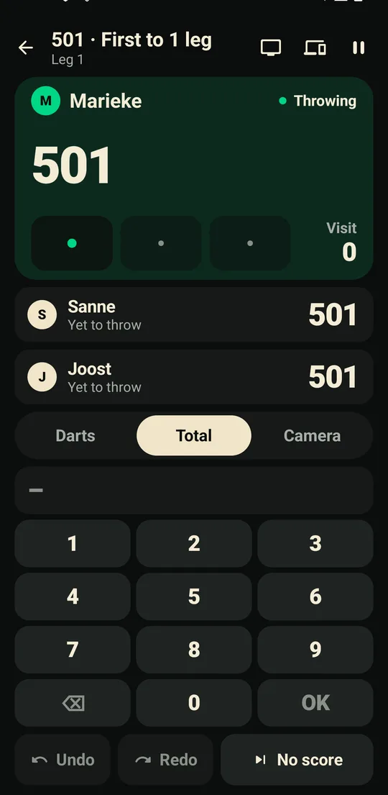

Een avond darts, stap voor stap.
De telefoon opzetten, scoren, toernooien, koppels en de tv in het café: alles wat Still Point doet, in de volgorde waarin je het tegenkomt.
De camera
- Plaatsing. Zet de telefoon aan de zijkant van het bord, op ongeveer de hoogte van de bull en schuin gericht, zodat het bord er als een ovaal uitziet. Een telefoonstandaard of een plank werkt; hij mag tijdens het spelen niet bewegen.
- Beeld. Bij Camera instellen moet de hele dubbelring in beeld zijn. Gebruik zoom als het bord klein is. De status wordt “Bord gevonden” zodra de omlijning de dubbelring volgt.
- Licht. Gelijkmatig licht op het bord helpt; vermijd sterk licht achter het bord dat in de lens schijnt.
- Correcties. Tik op een dart om hem te wijzigen. Ongedaan maken en opnieuw zijn altijd beschikbaar.
Handmatig scoren
Boven de toetsen schakel je met Darts, Totaal en Camera om hoe de beurt wordt ingevoerd, op elk moment van een wedstrijd. De telefoon onthoudt of je Darts of Totaal verkiest.
- Darts. Enkel, dubbel of triple, dan het nummer. Mis telt een dart die naast het bord ging.
- Totaal. Typ de score van de beurt op het numpad en druk op OK. Een totaal dat een bust is, verandert OK in Bust; een totaal dat de leg uitgooit vraagt alleen met hoeveel darts.
- Camera. Zet de wedstrijd midden in een beurt over op de camera: eerst wordt het bord gevonden, daarna gaat het spel verder met de darts die al gegooid zijn. Darts of Totaal zet hem terug.
Het scorescherm past op de telefoon zonder scrollen: de toetsen en de beurtknoppen houden hun formaat en de score krijgt de rest.

Spelers en koppels
- Een speler toevoegen. Typ een naam. Met Opslaan bij Spelers aan houden ze hun gemiddelden en geschiedenis bij elkaar; uit, dan spelen ze alleen deze wedstrijd. De knop Toevoegen, de Klaar-toets van het toetsenbord, of het scherm sluiten met een getypte naam voegen ze allemaal toe.
- Koppels. Met vier, zes of acht mensen bij X01 of cricket maakt Speel in koppels teams van twee in volgorde van de lijst: 1 & 2 tegen 3 & 4. Elk koppel heeft één score; partners wisselen elkaar af, één beurt per keer, ook over legs heen. De telefoon en de tv tonen wie er gooit en wie hierna komt.
- De cijfers van elke partner. Na een koppelwedstrijd toont de uitslag van elke partner het eigen gemiddelde (marks per ronde bij cricket), de beste beurt en finish, en wie elke leg uitgooide. De pagina van een opgeslagen speler telt zijn koppelwedstrijden in een eigen blok In koppels.
Een tweede telefoon
Een oude telefoon is een prima camera. Kies op de hoofdtelefoon bij Camera instellen Companion-apparaat gebruiken; tik op de tweede telefoon op Home op Companion en scan de code (of accepteer het verzoek). Kies daarna welke telefoon het bord filmt. De telefoons blijven gekoppeld, ook na een herstart, tot je ze ontkoppelt. Beide hebben hetzelfde wifi-netwerk nodig, of de hotspot van één telefoon.
Start je een nieuw spel op de scorebordtelefoon terwijl de cameratelefoon nog een wedstrijd heeft lopen, dan vraagt hij het eerst.
Toernooien
- Formules. Knock-out (met plaatsing, vrijlotingen gaan naar de hoogst geplaatsten), Dubbele eliminatie (verlies je één keer, dan speel je door in het verliezersschema; de grote finale kan opnieuw worden gespeeld), Competitie (iedereen tegen iedereen, één keer of thuis en uit) en Poules met knock-out.
- Wedstrijden. X01: 301, 501 of 701, legs en sets, dubbel uit; een langere finale en halve finales is één instelling, een wedstrijd om de derde plaats een andere. Cricket of cricket zonder punten: één game per wedstrijd.
- Koppels. Speel in koppels maakt van de spelers teams van twee, in volgorde van de lijst of met geloote partners. Opgeslagen spelers houden hun koppelresultaten op hun eigen pagina.
- Spelen. Hierna toont de wedstrijden die kunnen beginnen. Tik op een wedstrijd om hem met de camera of met de hand te spelen, of om een elders gespeelde uitslag in te voeren. Wedstrijden die in de app zijn gespeeld voegen gemiddelden, 180's, finishes en beste legs toe aan het tabblad Koplopers.
- Correcties. Corrigeer of wis elke uitslag. Wint een andere speler, dan tellen latere uitslagen die ervan afhingen niet meer mee en staan die wedstrijden weer klaar; er wordt niets stilletjes weggegooid.
- Tabellen. Twee punten per winst; bij gelijke stand beslissen het legsaldo, de gewonnen legs, de onderlinge wedstrijd, het gemiddelde en ten slotte de plaatsing.
- Afmelden. Een speler die weg moet kan worden afgemeld; hij geeft de wedstrijden die hij nog niet gespeeld heeft verloren.
- Plaatsen en de Order of Merit. Plaatsen leveren punten op (10 voor de titel, 7 voor de finalist, 5 voor de derde plaats, 4 voor de vierde, 3 voor de laatste acht, 2 voor de laatste zestien, 1 voor meedoen) die optellen in de Order of Merit: altijd, dit jaar of de laatste 90 dagen.
- Nog een editie. Een afgerond toernooi start zijn volgende editie met dezelfde regels en spelers, geplaatst op basis van waar iedereen eindigde.

Een telefoon bij elk bord
- De wedstrijdtafel. Open in een toernooi Borden en toon de locatiecode. De wedstrijdtafel stuurt elk bord vanzelf zijn volgende wedstrijd (of één voor één), roept elke wedstrijd hardop om en legt elke uitslag vast met de statistieken.
- De borden. Kies op de telefoon van elk bord Toernooien › Meedoen als bord, kies het nummer en scan de code. Het bord toont zijn volgende wedstrijd; speel hem met de camera of met de hand en de uitslag gaat terug naar de wedstrijdtafel.
- Plannen veranderen. Neem een wedstrijd terug van een bord via het blad van dat bord op de wedstrijdtafel. Valt de wifi weg, dan verbinden de borden zichzelf opnieuw en wacht een afgeronde uitslag op het bord tot de wedstrijdtafel hem heeft.
De tv
- Tik op het tv-icoon op het live bord of in een toernooi, dan op Groot scherm starten, of kies onder Chromecast een Chromecast of Google TV.
- Open op elke andere tv, beamer, laptop of tablet de browser en typ het getoonde adres (bijvoorbeeld
192.168.1.23:8217/s/k3m9qz7), of scan de QR-code. - Het scherm volgt de avond: de wedstrijd terwijl er een gespeeld wordt, met een kaart voor elke leg; als twee of meer borden spelen, alle borden naast elkaar met wie hierna komt en hoe lang de avond nog duurt; een schermvullende oproep zodra een wedstrijd naar een bord gaat; en na een toernooi de kampioen, de eindplaatsen, de Order of Merit en waar ieders darts naartoe gingen.
- Omroepen op de tv. De tv spreekt de oproepen uit via zijn eigen speakers. Zodra hij dat doet, stopt de telefoon met omroepen, zodat de zaal één stem hoort; een tv die niet kan spreken dempt de oproepen nooit.
- Geluiden. Groot scherm › Geluiden op de tv neemt de eigen opkomst-, 180-, game shot- en finishgeluiden van de club over, en elke opgeslagen speler kan een eigen opkomst hebben. Een Chromecast speelt bestanden tot 1,5 MB af.
- Bij meerdere borden. Elk bord (de standaard) of Dit bord, om de tv op de wedstrijd van de telefoon in je hand te houden.
- Meekijken op je telefoon. Spelers scannen de code op de tv om de avond op hun eigen telefoon te volgen, met hun eigen volgende wedstrijd.
Verschijnt er niets? De tv en de telefoon moeten op hetzelfde netwerk zitten. Een gastnetwerk houdt apparaten vaak uit elkaar; gebruik het hoofdnetwerk, of zet de hotspot van de telefoon aan en verbind de tv daarmee. Zeer oude tv-browsers die geen live verbinding kunnen houden, vragen elke seconde om nieuws; dat is normaal.
Na een wedstrijd
De uitslag opent met de eindstand en een statistiekenblad dat de spelers naast elkaar zet: 3-dart gemiddelde, eerste 9, finishpercentage, hoogste finish, beste leg, beste beurt, 180's, 140+, 100+ en 60+. Daaronder elke leg: wie hem won, in hoeveel darts en met welke finish. Verslag opent dezelfde wedstrijd met de beurten van elke speler, een dartkaart en de finishes. Deel de uitslag als afbeelding, of na een toernooi de hele avond.
Voortgang en spelers
- Voortgang. Kies een speler en een spel: het gemiddelde en de trend, eerste 9, finishpercentage, winst, beste leg, hoogste finish en 180's, vorm, hoe je beurten over scorebereiken vallen, en persoonlijke records die de wedstrijd openen waar ze vandaan komen.
- Spelerspagina's. De pagina van een opgeslagen speler toont hun carrière: gemiddelde, beste wedstrijd, beste leg, hoogste finish, 180's, recente vorm, hoe het gaat tegen de mensen tegen wie ze het vaakst spelen, hun koppelresultaten en de toernooien die ze wonnen of waarmee ze op het podium eindigden.
- Home. Als de telefoon weet wie je bent, toont de tegel Voortgang je gemiddelde en je laatste vijf uitslagen.

Oefenen
Rond de klok, Uitgooioefening, de Scoretrainer, Groepering op triple 20 en de Bull-uitdaging hebben elk hun eigen uitslag. Na een sessie zie je hoe die zich verhoudt tot je eerdere sessies: een persoonlijk record, of je beste en gemiddelde van daarvoor.
Accounts
Accounts zijn optioneel. Log in met Google of e-mail om de wedstrijden van je keuze te back-uppen, en om een wedstrijd goed te keuren die je op de telefoon van een vriend hebt gespeeld, zodat hij voor jou telt. Zie Privacy voor precies wat er bewaard wordt.